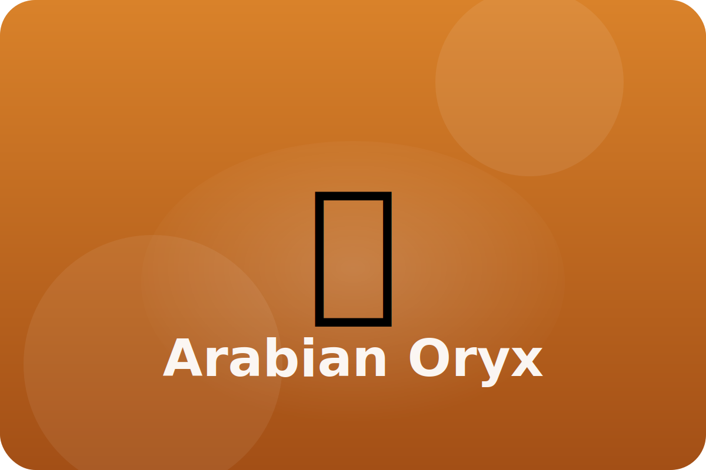

Desert
Grace in the dunes
Arabian oryx live in small herds, nibbling on tough desert grasses and roots.
Light Coat
Pale fur reflects sunlight, keeping the oryx cooler.
Water Saver
They can raise their body temperature safely, meaning they sweat less and save water.
Long Horns
Sharp horns defend against predators and help break branches for food.
Keep exploring the Arabian Oryx
Watch the Arabian Oryx in action
Arabian oryx videos for kids